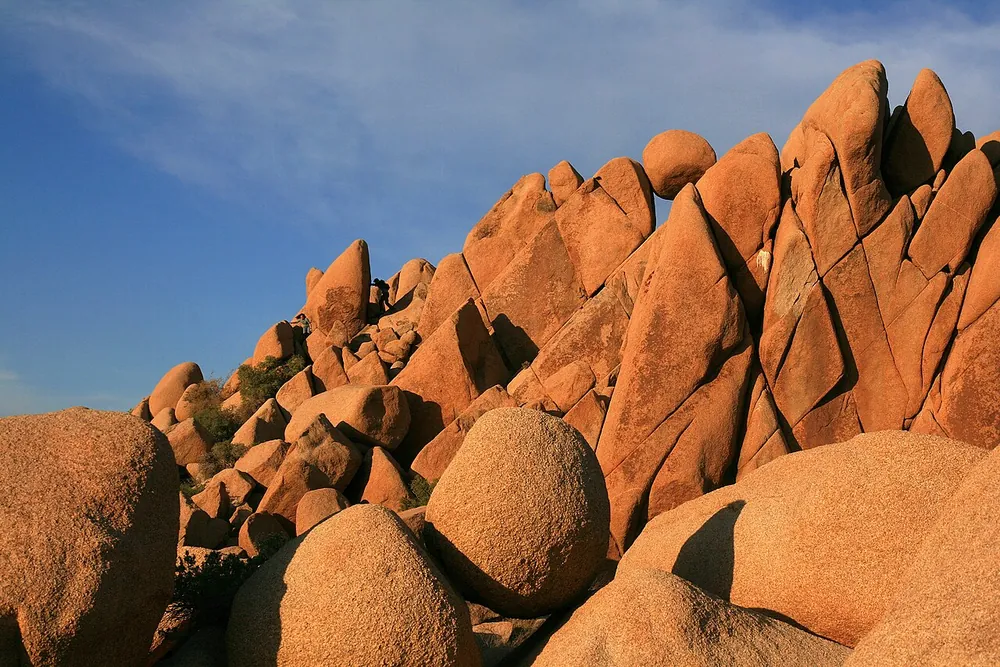
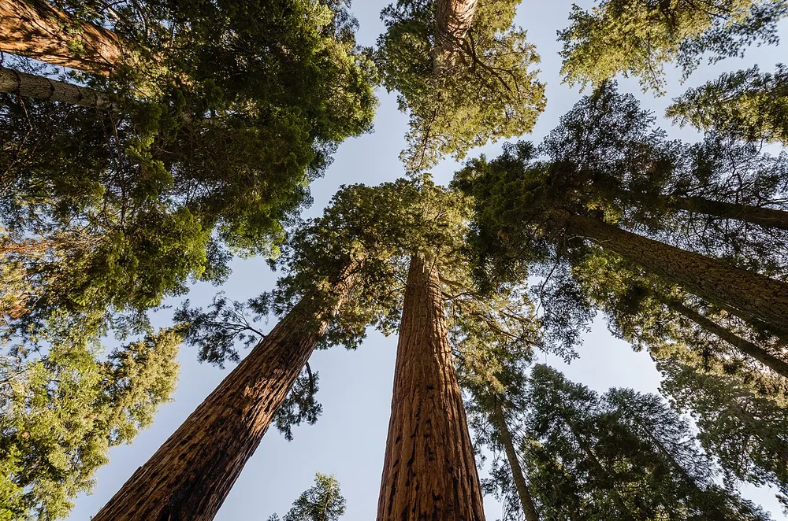

The claim
The “Silicon Forest” or “petrified giant trees” theory holds that certain rock formations — above all Devils Tower in Wyoming — are the remains of enormous trees, hundreds of metres tall, from a lost age when the planet supported a giant biosphere. The story usually adds that an “incredibly large petrified root system” has been found beneath the Tower, and that this has been “covered up”.
The images that spread are genuinely striking, and the resemblance is real: Devils Tower is a tall, fluted, flat-topped column standing alone above the plains. Human pattern-recognition does the rest.
What the Tower is
Devils Tower is an igneous intrusion — magma that pushed up into existing sedimentary layers and cooled underground without erupting, then was exposed when the softer rock around it eroded away. It is about 386 m tall, and it is the world’s largest example of polygonal columnar jointing.
The rock is phonolite porphyry, a rare volcanic rock. The relevant point is mineralogical: it is composed of feldspar and hornblende. There is no lignin, no cellulose, no wood anatomy of any kind — and a fossilised tree preserves cell structure even when replaced by silica.
The columns themselves are a cooling artefact. Molten rock contracts as it solidifies; the contraction has to go somewhere, so it cracks. Because the stress is most efficiently relieved by three fractures meeting at 120°, the cracks form hexagons. Columns grow perpendicular to the cooling surface. Fast cooling makes narrow columns; slow, insulated cooling makes large ones — which is why the Tower’s are so spectacular. The same process produces the Giant’s Causeway in Northern Ireland and Devils Postpile in California, neither of which has ever been claimed as a tree stump.
The Tower is also not the only formation in the American West with this geometry; the “forest” claims tend to be applied to whichever basalt column field is currently going viral.
“Scientists discovered that the Devil’s Tower butte in Wyoming is originally a giant tree after finding an incredibly large petrified root system underneath.”
Reuters checked this claim in 2020. A National Park Service geologist responded that “there is no evidence to support such a theory as a tree stump or petrified tree roots,” pointing to the NPS’s own account of the Tower’s formation. There is no published discovery of a root system. The claim is a caption attached to someone else’s photograph.
The scientific literature on the Tower is not settled on every detail — geologists still argue between laccolith, stock, volcanic plug and maar-diatreme models for the intrusion’s shape — but none of them involve biology. The disagreement is about magma plumbing, not about whether the rock was ever alive.
The trees that really are giant
The anti-climax is better than the myth. There are genuinely enormous trees, and they are documented individually:
- Coast redwood (Sequoia sempervirens) — the tallest living trees; “Hyperion” in California is 115.9 m, verified by climbing and tape.
- Giant sequoia (Sequoiadendron giganteum) — the most massive; “General Sherman” has a trunk volume around 1,500 m³.
- Petrified Forest National Park, Arizona — real petrified wood from the Late Triassic Chinle Formation, where silica replaced the organic tissue of fallen conifers over 200 million years. You can see the growth rings and cell structure.
- Ancient clonal trees — Pando, a quaking aspen colony in Utah, is a single connected organism covering tens of hectares.
Real petrified wood is the perfect control. It is wood turned to stone, and it still looks like wood — rings, bark texture, cell walls under a microscope. Devils Tower looks like a stump from a distance and like a crystal from a centimetre away.
Where it fits
The giant-tree theory is a scale argument: if the world once held trees a kilometre high, it could hold giants, and the geological timetable would have to be wrong. It attaches easily to the young-Earth literature and to the “suppressed history” frame of the proven-conspiracy pages — where the absence of evidence is read as evidence of suppression, rather than as an absence of evidence.
Sources for this page
- National Park Service, “How the Tower Formed” — Devils Tower National Monumentnps.gov/deto/learn/nature/tower-formation.htm
- National Park Service, “Columnar Jointing”nps.gov/subjects/volcanoes/columnar-jointing.htm
- NPS Geodiversity Atlas — Devils Tower National Monumentnps.gov/articles
- Reuters Fact Check, “Devil’s Tower is not a tree” (2020)reuters.com
- Scientific American, “Volcanic Activity, Not Giant Bears, Created Enigmatic Devils Tower”scientificamerican.com
- IUGS Geoheritage, “Devils Tower, Mateo Tepe”iugs-geoheritage.org
- Geology In, “Is the Devil’s Tower the World’s Largest Petrified Tree?” — the claim and its refutationgeologyin.com
Open resources on this topic
- BookVisiting the giant trees — ['Sibbing, Phyllis Armelie', 'Sweeney, Will, illustrator'] · 1997 (Internet Archive, free to read)
- BookNotes on the Giant Trees of Victoria — N J Caire · 1905 (Internet Archive, free to read)
- PapersOpen-access articles: DOAJ · PubMed Central · Internet Archive Scholar
- BooksPublic-domain and borrowable copies: Open Library · Project Gutenberg · Google Books
More images

Giant Marbles in Joshua Tree National Park
Brocken Inaglory · CC BY-SA 3.0 · Commons
Giant sequoias in Sequoia National Park 2013
Tuxyso · CC BY-SA 3.0 · Commons


Cite this page
Momin, S. (2026). The Giant Trees. The Larger World Archive. https://drsamonline.github.io/LARGE_GLOBE/giant-trees.htmlMomin, Sohil. “The Giant Trees.” The Larger World Archive, 2026, https://drsamonline.github.io/LARGE_GLOBE/giant-trees.html.Momin, Sohil. “The Giant Trees.” The Larger World Archive, 2026. https://drsamonline.github.io/LARGE_GLOBE/giant-trees.html.@misc{the2026giant,
author = {Momin, Sohil},
title = {The Giant Trees},
year = {2026},
howpublished = {The Larger World Archive},
url = {https://drsamonline.github.io/LARGE_GLOBE/giant-trees.html},
note = {Last reviewed 20 November 2026}
}Last reviewed 20 November 2026 · Corrections policy · this page is not peer reviewed